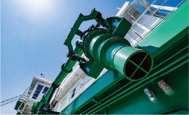
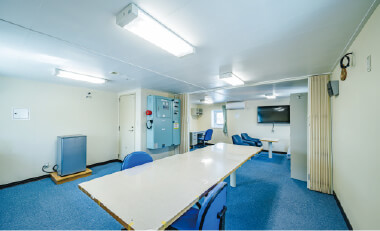
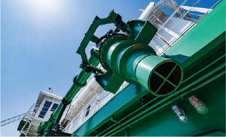
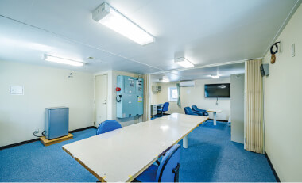

環境問題に対応した作業船「八洲丸」が完成。
港湾工事などのCO2排出量を削減。
主要諸元
呼称
バージアンローダ船 D2,500PS型
全長
54.0m
全幅
16.0m
深さ
3.80m
機関出力
1,839kW（揚土ポンプ駆動機）
排水トン数
2,149t（計画吃水2.5m）
最大排送距離
2,000m
揚土能力
750㎥/ｈ
排砂管径
φ 630mm
浚渫・揚土工事などにおける環境負荷を軽減
りんかい日産建設では港湾・護岸工事などの際にさまざまな作業船を活用していますが、現在、地球温暖化対策や環境保護は海事の分野にも求められるようになりました。そこで当社ではサステナブルな視点から設計したバージアンローダ船「八洲丸」を建造。2023年5月に完成しました。
八洲丸は、政府が策定した地球温暖化対策計画に掲げられた2030年度のCO2排出削減目標の達成、および我が国の2050年カーボンニュートラル達成を念頭に置いた「環境負荷対策船」です。NOx二次規制対応やバイオ燃料対応型機関の搭載など、さまざまな面で環境課題に対応しています。
船名の「八洲」は、我が国の古称「大八洲」が由来です。「揚土によって新しい土地（洲）を造成する」という意味を込めています。
八洲丸に施した主な環境対策
機関
● IMO（国際海事機関） NOx二次規制に対応
● バイオ燃料の使用が可能
● ウインチは電動式を採用し、専用の機関を必要としない
電力
● 停泊時は、搭載する陸上電力供給設備から船内電力を確保することで、発電機からの電力が不要
海洋汚染
対策
● 各駆動部の作動油に、生分解性オイルを使用
● 船内生活で排出される排水等を、汚水処理装置を使用し適切に処理
● 施工中に排管を通じて泥水が逆流して海洋へ流出することを防ぐために、排管に逆止弁を設置
● 海面への油流出対策として、オイルフェンス巻取機を設置。
油・燃料の流出に備えて、迅速にオイルフェンス展張が可能。
自船だけでなく、他船の流出でも使用可能

 



バージアンローダ船とは
土砂を埋立地まで排送する船です
浚渫工事（堆積した土砂を浚い、取り除く工事）の際、海底掘削などによって生じた土砂は、土運船で輸送されます。これを埋立地に排送する作業のうち、揚土工（土を埋立地に陸揚げする工程）で使用する作業船を「バージアンローダ船」といいます。
「今治里山スタジアム」コンテナショールームで
地域・来訪者に向けて施工情報などを発信。
FC今治の新拠点、そして試合以外にも人が集える場所
「今治里山スタジアム」は、日本プロサッカーリーグ（Jリーグ）に所属するFC今治の、新たなホームスタジアムです。2023年1月に完成し、同月29日にオープニングセレモニーが行われました。
このスタジアムは「サッカーの試合日はもちろん、365日の賑わいを創出する仕掛けをふんだんに盛り込んだ地域や自然環境と連携し循環しながら成長し続ける何世代にも渡って地域の人々に愛される今までにないサッカースタジアム」をコンセプトに掲げています。試合日以外も人が集まれる街のシンボルとして、今後のさらなる活用や発展が期待されています。
 学生の皆さんへの現場見学会で拠点として活用
学生の皆さんへの現場見学会で拠点として活用「クラブチーム＋地域＋企業の発展」に寄与
このスタジアムは「里山スタジアムプロジェクト」として計画され、りんかい日産建設は四国通建株式会社様とともに施工を担当しました。
プロジェクト参画にあたり、建設会社のCSR活動として当社は「クラブチーム＋地域＋企業の発展に寄与する」というコンセプトを掲げました。
工法や資材の解説などを吊るしパネルで展示
［具体的取り組み事例］
コンテナハウスを使ったショールーム
地域住民などにおけるスタジアムへの期待感や建設に対する興味・関心を高めるために、建設期間中、敷地内の一角にコンテナハウスを使ったショールームを設置しました。内部にピクチャーレールやライティングレールを備え、自由なレイアウトが可能です。ここでスタジアム建設のプロセス紹介や完成模型の展示などの情報発信を行いました。当社としては初めての試みであり、建設業界としてもあまり例がないようです。
スタジアム完成後も、このショールームは来訪者に対する情報発信の場として活用されています。
［第1期］2022年7月～
構想段階のイメージスケッチ、図面、工事中の写真、工法や資材の解説などを吊るしパネルで展示。完成予想模型も見ることができます。

［第2期］2022年10月～
展示内容を刷新しました。「施工方法」、使用する「重機」、そして工事に携わる「人（作業員）」をテーマにした3枚の垂れ幕で、工事について解説。また、見学ツアー参加者や関係者による寄せ書きも展示しました。
［第3期］2023年1月～（完成後）
設置場所を工事現場事務所近くから移動。工事終了後も引き続き活用されます。救護室の隣でエアコンの付く同室を熱中症対策の避難場所として活用する計画もあります。
住所
〒794-0067 愛媛県今治市高橋ふれあいの丘1-3
所有者
株式会社今治. 夢ビレッジ
運用者
株式会社今治. 夢ビレッジ
設計者
株式会社梓設計
建設者
りんかい日産建設株式会社、四国通建株式会社
収容人数
5,316人